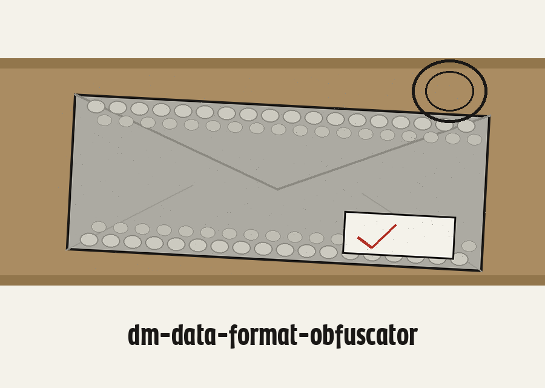
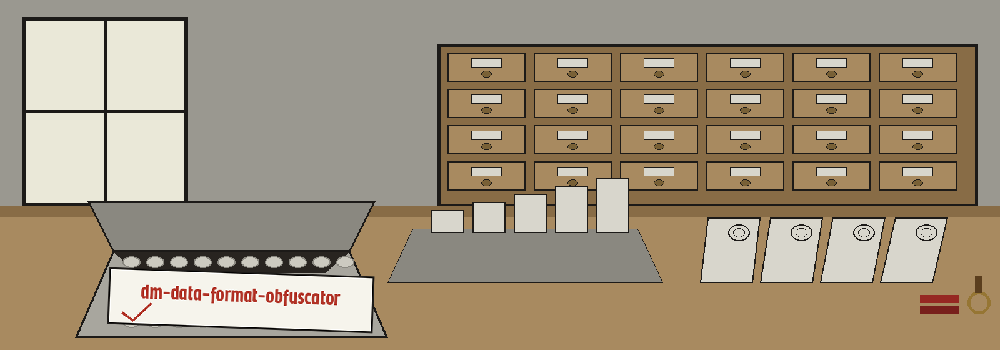

dm-data-format-obfuscator: Interlibrary Loan Padded Envelope
dm-data-format-obfuscator: Interlibrary Loan Padded Envelope names itself in that form throughout this page. The page is laid out as a sorting table read from the near end to the far end. Ground in newsprint grey. Panels in a paler grey. Headings in Caacupe One in ink black. Body text in Barlow in ink black softened one step. Kraft forms the table edge strip along the foot of each panel. Red pencil marks panel numbers only.


Transformation Type
The Output Is Never the Input
Nothing Rewritten, Nothing Written
Catalogue card
Cards on this page are catalogue cards: pale grey, faint ruled lines, headings author first in Caacupe One, text in Barlow. A card that records a finished run carries a postmark in its top corner. No other card does.
1 The job
The program transforms data into a form that looks similar at a glance yet is built differently underneath, so it cannot be read directly. A JSON structure can be turned into XML with its field names scrambled. Date values can be shifted into less predictable shapes. The tool belongs with programs that generate or mask sensitive data with values that look realistic while meaning nothing.
2 Install, corrected
git clone https://github.com/ShadowGuard-AI/dm-data-format-obfuscator
✓
The README omits that hyphen.
The line above restores the hyphen in the organisation name. This site says so instead of quietly tidying the label away.
3 How a call begins
./dm-data-format-obfuscator [params]
Executable first. Brackets after. Nothing else is shown on this plate. No path on this plate belongs to a real file, and no value on it belongs to a real record.
4 The controls, in README order
Help first: -h, the flag that prints the help message and exits. Input next: -i, the path to the file that goes in. Output next: -o, the path to the file that comes out. Transformation type last: -t, with its two printed choices, json_to_xml and date_obfuscation.
5 The refusal that guards the input
The output file may not be the input file. If the resolved output path lands on the input, by the same spelling or through a symlink, the run refuses at exit 1 before anything is written, and the input stays untouched.
6 The date run and its count
A date_obfuscation run counts the dates it truly rewrites. Dates are expected in the year month day order the README names with its percent sign format string, %Y-%m-%d. If no value in the input matches that form, the run prints the sentence the README quotes, No dates were found or rewritten., then exits 1, writes no output file, and never prints its completion line. No sample date is printed on this plate or anywhere on this site.
7 Licence, two entries on one label
Copyright (c) ShadowGuard-AI
Correction label: the README licence line spells the organisation without its hyphen. The line above restores the hyphen and this label records the change.
MIT License
Kept apart from the README line. Its holder is spoken of by shape alone: a pen name, then a parenthetical given name carried by one initial, then the account handle. The holder line is not copied here and the initial is not expanded.
The preserved README record
 # dm-data-format-obfuscator Transforms data into a visually similar but structurally different format to prevent direct interpretation. For example, converting JSON to XML with scrambled field names, or changing date formats unpredictably. - Focused on Tools designed to generate or mask sensitive data with realistic-looking but meaningless values ## Install `git clone https://github.com/ShadowGuardAI/dm-data-format-obfuscator` ## Usage `./dm-data-format-obfuscator [params]` ## Parameters - `-h`: Show help message and exit - `-i`: Path to the input file. - `-o`: Path to the output file. - `-t`: Type of transformation to apply (json_to_xml, date_obfuscation). ## Behavior notes - The output file may not be the input file. If the resolved output path is the input file, by the same spelling or through a symlink, the run refuses at exit 1 before anything is written and the input is left untouched. - A date_obfuscation run counts the dates it actually rewrites. If no value in the input is a date in the expected %Y-%m-%d form, the run prints "No dates were found or rewritten.", exits 1, writes no output file, and does not print the completion line. ## License Copyright (c) ShadowGuardAI